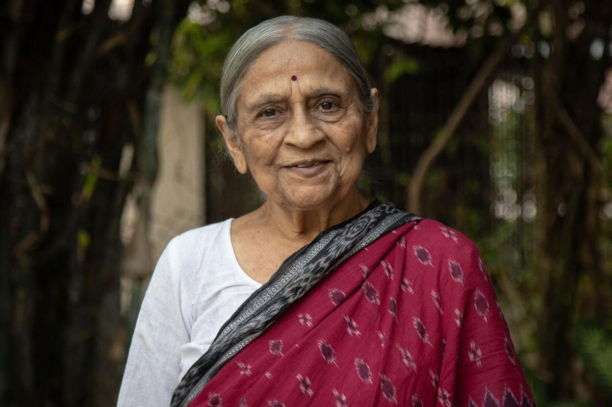

"I cannot say enough about the care I received at this hospital. From the moment I was admitted, I felt like I was in good hands. The doctors and nurses were compassionate, knowledgeable, and always took the time to explain everything to me in a way that I could understand. Thanks to their care, I was able to make a full recovery."

Jaya, New Delhi
"I have been to many hospitals in my lifetime, and I can honestly say that this one is the best. The staff here is so friendly and welcoming, and they go above and beyond to make sure that patients are comfortable and well taken care of. I would recommend this hospital to anyone in need of medical care."
Rohan, Mumbai
"I recently underwent surgery at this hospital, and I was blown away by the level of expertise and care that the surgical team provided. They took the time to explain everything to me in advance, and they were always available to answer my questions and address my concerns. Thanks to their skill and dedication, my surgery was a success, and I am on the road to recovery."
 Rajan, Chennai
Rajan, Chennai
"When my mother was diagnosed with a serious illness, we were all very scared and unsure of what to do. But the team at this hospital provided us with the support and guidance we needed to get through this difficult time. They treated my mother with compassion and respect, and they helped our whole family understand what was happening and how we could best support her. We are so grateful for their care."
 Shreya, Kolkata
Shreya, Kolkata